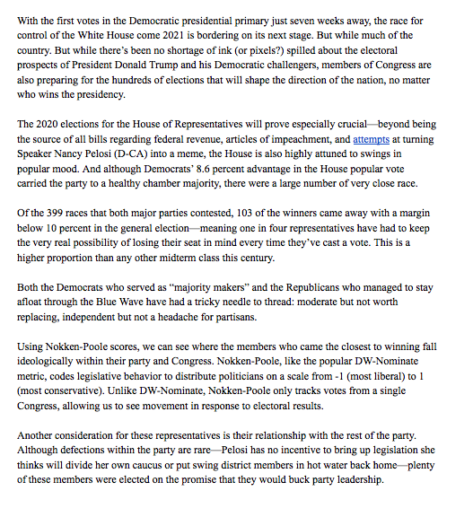

Things to know
-
This project was the longest and most involved article I wrote for my Data Journalism class.
-
I worked on this project alone, and relied heavily on public databases that I could trim and manipulate in Microsoft Excel.
-
I had to take a spreadsheet of EVERY Congressional race since 1976's votal totals and edit to just include the winners' share of the vote.

How it works
The first part of the article, pictured left, offers readers a summary of where Congress stands today. From there, I tried to show that there is a connection between how close a Congressman came to losing and how they behave in Congress. I used two measures: ideology
and party loyalty. In both cases. vulnerable Democrats were more likely to moderate themselves and stay loyal to the party than Republicans. Finally, I looked at how similar Congressmen behaved after the election, to see who survived and who learned any lessons.